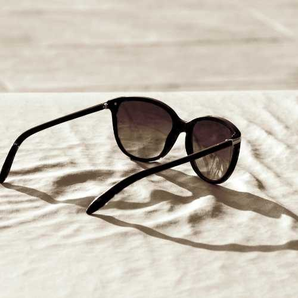
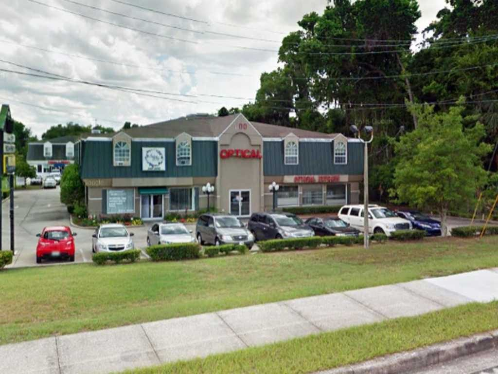

Dr. Paul E. Anderson has been examining eyes since 1986 and has owned this practice on SW 10th Street since 2002. Same doctor, same chair, every visit. Not a chain, not a rotating roster.
Paul Anderson grew up in Cleveland, the son of Scottish parents. He took a chemistry degree at Ashland University, then earned his Doctor of Optometry at The Ohio State University in 1986.
After a stretch at a laser eye center in Orlando, he came to this Ocala practice in 2000 and bought it outright on January 15, 2002. He has been the doctor here ever since.
He examines adults and children, manages disease, fits the difficult contact lenses other offices give up on, and handles the pre- and post-operative care when a patient needs LASIK, cataract, or glaucoma surgery. He speaks enough Spanish to run a basic exam in it.
The Ohio State University College of Optometry.
Where the surgical co-management side of the practice comes from.
Owner and operating doctor since January 15, 2002.
President of VOSH Southeast. Past president, Silver Springs Lions Club. Board member, Interfaith Emergency Services.
“The staff was very professional and friendly from the time I walked in the door.”
Patricia S. · Verified patient review
This is a full-scope optometric practice. Routine vision correction sits alongside disease management, specialty lens work, and urgent care — so most of what an eye can do wrong gets handled in one place.
Adult and pediatric eye health examinations — a full look at how the eye is working and how healthy it is, not just a prescription check.
Glaucoma, cataracts, diabetic eye disease, macular degeneration, dry eye, allergy eye, infections, and retinal or vitreous detachment — diagnosed and managed here.
Nonsurgical corneal reshaping. Lenses worn overnight reshape the cornea so the day is spent without glasses or contacts.
Near-sightedness tends to get worse through childhood. Myopia control is about slowing that progression down while the eye is still growing.
Trauma, sudden changes, infections, something in the eye. Call the office — urgent eye problems belong with an eye doctor, not a waiting room.
For LASIK, cataract, and glaucoma surgery, Dr. Anderson handles the pre-operative workup and the post-operative care, and refers the procedure to the right surgeon.
Fittings for the eyes that are difficult to fit, plus everyday soft lenses. AcuVue and more — and we fill outside prescriptions.
For the partially sighted — help getting as much use as possible out of the vision that remains.
Screen-related vision problems, and the nutrition side of keeping eyes healthy for the long run.
Not sure which one you need? That is what the exam is for — call 352-867-1888.
Dr. Anderson is president of VOSH Southeast — Volunteer Optometric Services to Humanity. He has taken five humanitarian eye-care missions: four to Peru, one to Nicaragua, examining people who would otherwise never see an eye doctor at all.
Closer to home, he is a past president of the Silver Springs Lions Club and sits on the board of Interfaith Emergency Services. It is the same instinct, applied in Marion County.
Volunteer Optometric Services to Humanity

Women's, men's, and children's frames, plus sunglasses — picked out in person, with someone who actually knows how a frame should sit on your face. Tracie Thompson, LDO, the practice manager and licensed optician, has been doing exactly that here for years.
We fill any prescription. Ours or someone else's — and we can duplicate the pair you already like.
Free adjustments and minor repairs on anything you bought from us. Walk in, we'll fix it.
Contacts too. AcuVue and other brands, fitted properly rather than guessed at.
“This by far this the best doctor's office I've ever had.”
Nikia Hagins · Google review
“Had a great experience between getting the exam and the professional experience getting fitted for new glasses.”
Ken Watson · Google review
“I had a great experience. The receptionist was very nice Dr Anderson was wonderful.”
Diana Pisano · Google review
“So far my favorite place.. The doctor is really knowledgeable and always nice.”
Meghann McKenna · Google review
“I have been going to Optical Express for over 30 years and I now take my children there as well.”
Verified patient review

Look for the OPTICAL sign on SW 10th Street. Parking is right out front.
Most eye disease is quiet until it isn't. An exam takes an hour, and Dr. Anderson has been doing them for forty years.
600 SW 10th St, Ste 104 · Ocala, FL 34471 · Se habla español